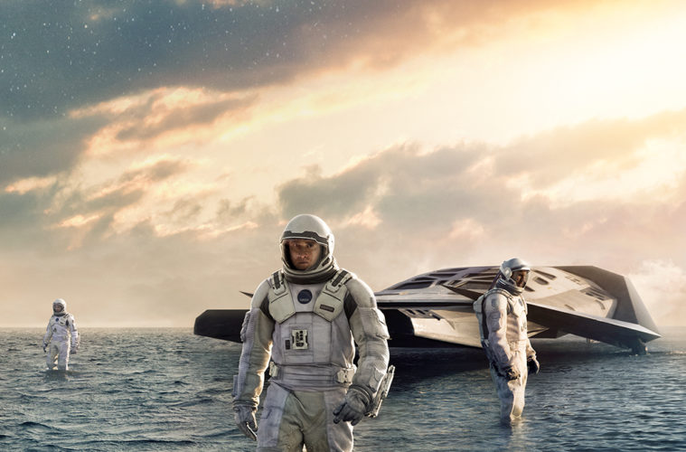
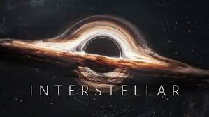

„ინტერსტელარი“ 2014 წლის სამეცნიერო ფანტასტიკის ჟანრის ეპიკური ფილმია, რომელიც კრისტოფერ ნოლანმა გადაიღო. სიუჟეტი მომავალში ვითარდება, სადაც დედამიწაზე რესურსების ამოწურვის გამო კაცობრიობა გადაშენების პირასაა და ასტრონავტების ჯგუფი ახალი საცხოვრებელი პლანეტის საძიებლად კოსმოსურ მოგზაურობაში მიემგზავრება.